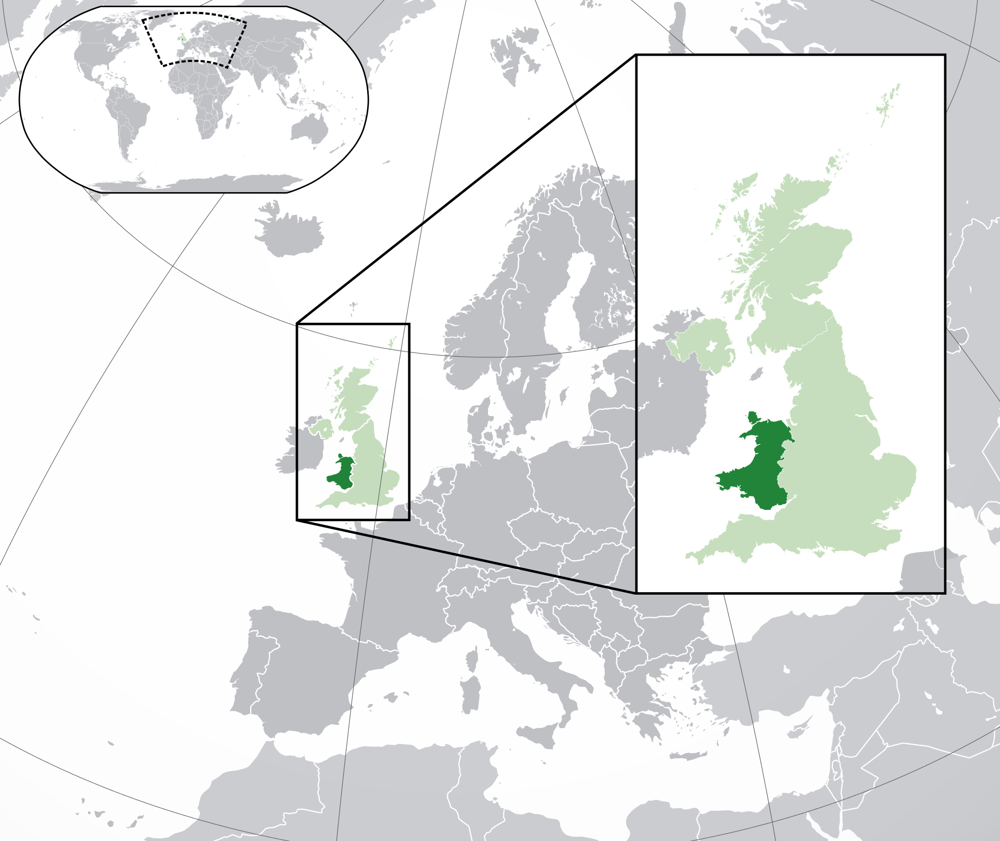

DVLA - IdMotorVehicle
Register
The current system for Great Britain was introduced on 1 September 2001. Each registration index consists of seven characters with a defined format.
From left to right, the characters consist of:
• A local memory tag, or area code, consisting of two letters which together indicate the local registration office. By December 2013, all local offices had been closed, but the letters still represent a region. The letters I, Q and Z are not used as local office identifiers, though O is still needed for Oxford; Z can be used only as a random letter.
The first of these two letters is a mnemonic standing for the name of the broad area where the registration office is located. This is intended to make the registration more memorable than an arbitrary code.[14][15] For example, A is used as the first character in all registrations issued by the three offices located in the vicinity of East Anglia;
• A two-digit age identifier, which changes twice a year, in March and September. The code is either the last two digits of the year itself if issued between March and August (e.g. "10" for registrations issued between 1 March and 31 August 2010), or else has 50 added to that value if issued between September and February the following year (e.g. "60" for registrations issued between 1 September 2010 and 28 February 2011);
• A three-letter sequence which uniquely distinguishes each of the vehicles displaying the same initial four-character area and age sequence. The letters I and Q are excluded from the three-letter sequence, as are combinations that may appear offensive (including those in foreign languages). Due to batch allocation of new registration marks to dealers, it is common for cars with "neighbouring" letter sequences to be of the same manufacturer.
- Official local mnemonic
-
Anglia - A
-
Birmingham - B
-

Cymru (Wales) - C
-
Deeside - D
-
Essex - E
-
Forest and Fens - F
-
Garden of England - G
-
Hampshire and Dorset - H
No official mnemonic - K
-
London - L
-
Manchester and Merseyside - M
-
North - N
-
Oxford - O
-
Preston - P
-
Reading - R
-
Scotland - S
-
Severn Valley - V
-
West of England - W
Personal export - X
-
Yorkshire - Y